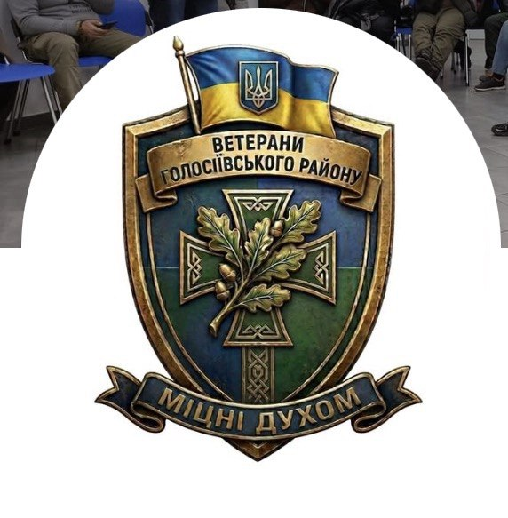

Місто Київ. Корисна інформація, пільги, зразки документів та контакти.
Ветеранам
Зразки заяв
Заяви на матеріальну допомогу, лікування, реабілітацію та звернення до установ Голосіївського району.
Натисніть, щоб відкрити зразок та перелік документів →Допомога громади Києва
Матеріальна підтримка та міські програми для ветеранів.
Лікування та реабілітація
Інформація про медичні заклади, лікування та реабілітаційні центри.
Лікування зубів, реабілітація та супровід →Пільги ветеранам
Соціальні гарантії, компенсації та передбачені законом пільги.
Депутати Голосіївського району
Контакти депутатів, графік прийому та подання звернень.
Юридична допомога
Безоплатні юридичні консультації та правова підтримка.